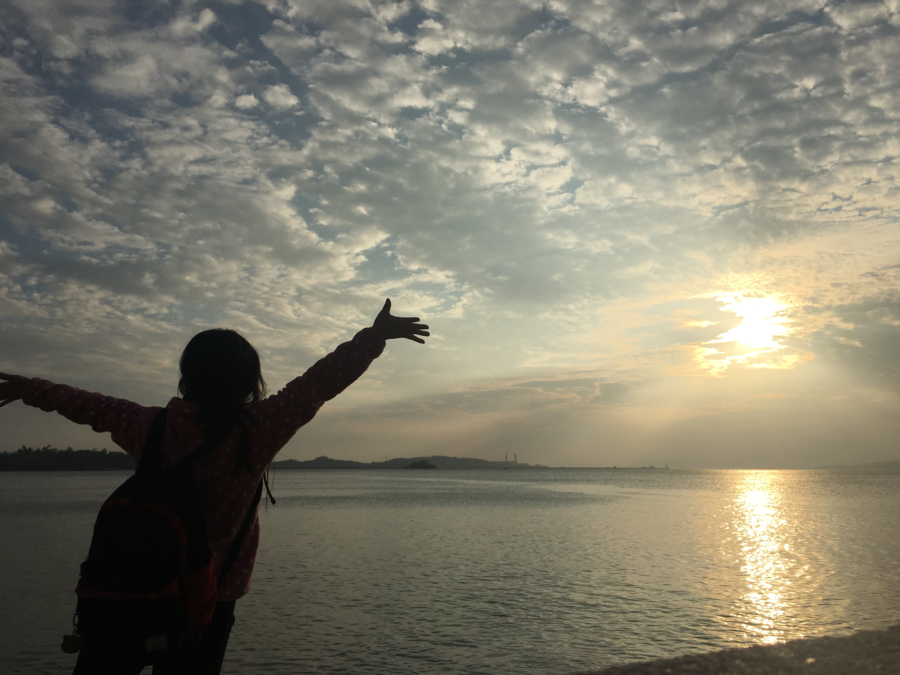
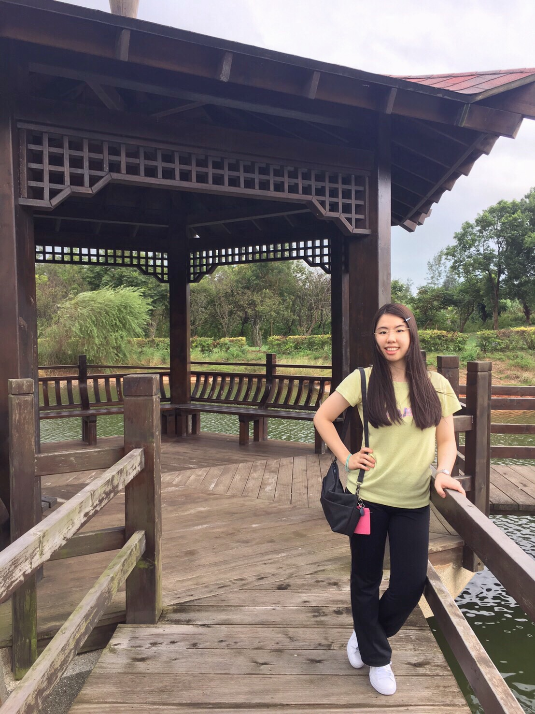
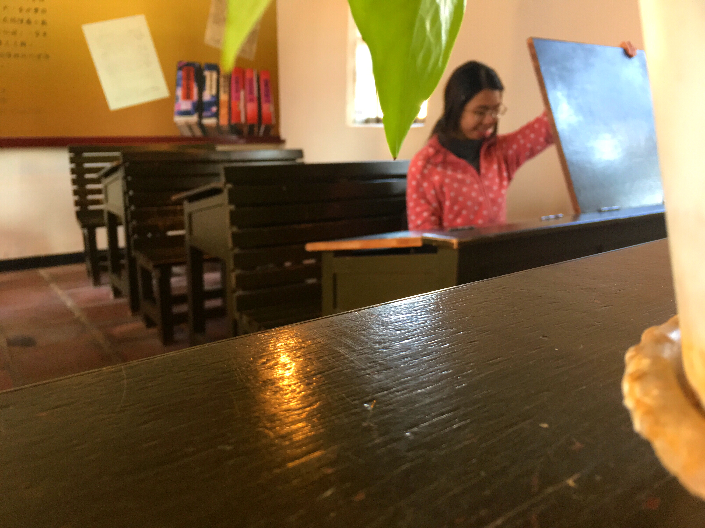
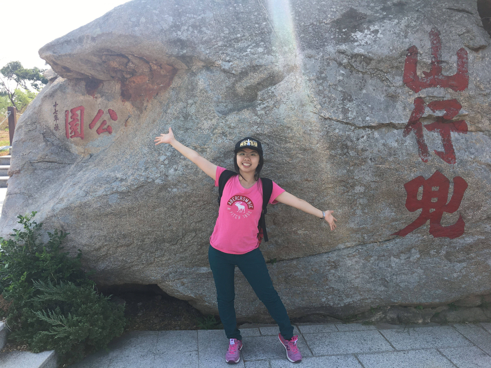
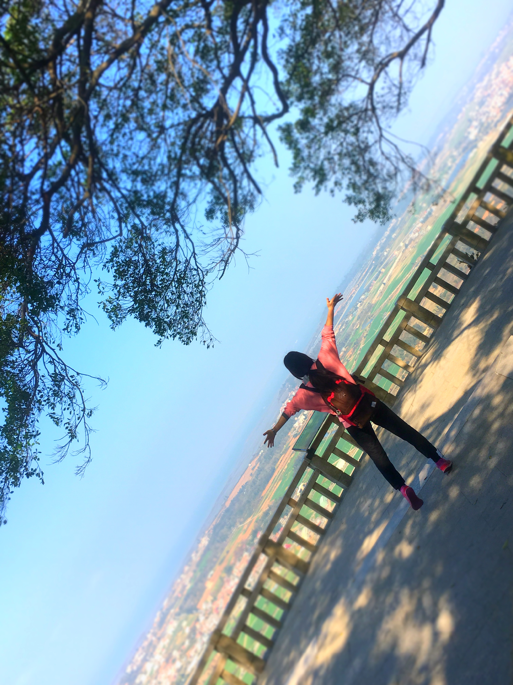

主頁
關於
照片

陳士茵 (Sherry Chen)
欄位
內容
身分
學生
性別
女生
就讀學校
國立金門大學
科系
資訊工程學系
學號
>
110610529
E-mail
dearsherrychen@gmail.com
個人Git網站
SherryChen0304
Facebook
陳士茵
運動
游泳
血型
>
A型
興趣
>
看電影、看小說
>
關於我的故事
(自我介紹)

去年暑假尾聲，新生入學，抱著緊張的心情，來到即將就讀的大學。與家人在校園裡逛了逛，開心的在大學池中的亭子留了影。希望未來的大學四年，過得多采多姿！

懷念以前高中的時光，固定的課桌椅，固定的座位，自從升上大學，就是跑堂上課了，有些感慨。順帶一提，我高中就讀私立格致高級中學。

因為上大學，所以有機會來到金門，當然要把握大學四年的時光，好好探索金門這塊島嶼。只要有空閒時間，就可以和朋友相揪出遊玩。我喜歡認真的讀書後，好好地玩，放鬆心情。

希望在大學四年，能好好的充實自己！
>